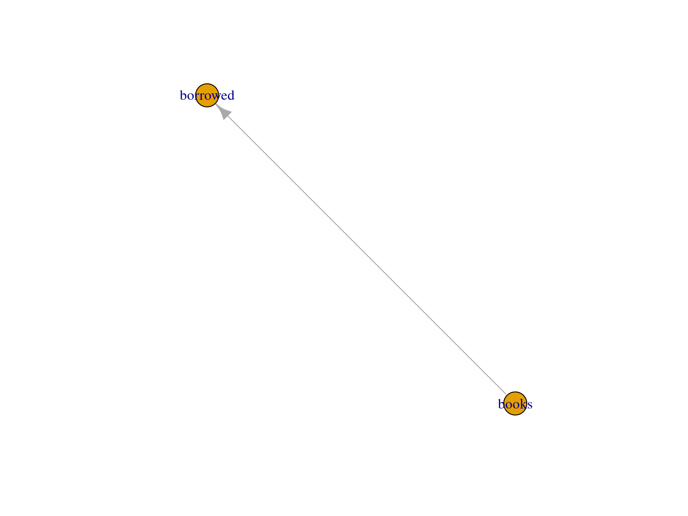
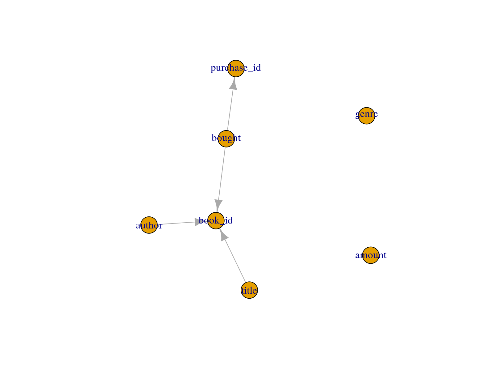

Overview
DataFakeR is an R package designed to help you generate sample of fake data preserving specified assumptions about the original one.
Learning DataFakeR
If you are new to DataFakeR, look at the Welcome Page.
You may find there a list of useful articles that will guide you through the package functionality.
Usage
Configure schema YAML structure
# schema-books.yml
public:
tables:
books:
nrows: 10
columns:
book_id:
type: char(8)
formula: !expr paste0(substr(author, 1, 4), substr(title, 1, 4), substr(bought, 1, 4))
author:
type: varchar
spec: name
title:
type: varchar
spec: book
spec_params:
add_second: true
genre:
type: varchar
values: [Fantasy, Adventure, Horror, Romance]
bought:
type: date
range: ['2020-01-02', '2021-06-01']
amount:
type: smallint
range: [1, 99]
na_ratio: 0.2
purchase_id:
type: varchar
check_constraints:
purchase_id_check:
column: purchase_id
expression: !expr purchase_id == paste0('purchase_', bought)
borrowed:
nrows: 30
columns:
book_id:
type: char(8)
not_null: true
user_id:
type: char(10)
foreign_keys:
book_id_fkey:
columns: book_id
references:
columns: book_id
table: booksDefine custom simulation methods if needed
books <- function(n, add_second = FALSE) {
first <- c("Learning", "Amusing", "Hiding", "Symbols", "Hunting", "Smile")
second <- c("Of", "On", "With", "From", "In", "Before")
third <- c("My", "Your", "The", "Common", "Mysterious", "A")
fourth <- c("Future", "South", "Technology", "Forest", "Storm", "Dreams")
second_res <- NULL
if (add_second) {
second_res <- sample(second, n, replace = TRUE)
}
paste(
sample(first, n, replace = TRUE), second_res,
sample(third, n, replace = TRUE), sample(fourth, n, replace = TRUE)
)
}
simul_spec_character_book <- function(n, unique, spec_params, ...) {
spec_params$n <- n
DataFakeR::unique_sample(
do.call(books, spec_params),
spec_params = spec_params, unique = unique
)
}
set_faker_opts(
opt_simul_spec_character = opt_simul_spec_character(book = simul_spec_character_book)
)Source schema (and check table and column dependencies)
options("dfkr_verbose" = TRUE) # set `dfkr_verbose` option to see the workflow progress
sch <- schema_source("schema-books.yml")
schema_plot_deps(sch)
schema_plot_deps(sch, "books")
Run data simulation
sch <- schema_simulate(sch)
#> =====> Simulating table 'books' started..
#> ===> Simulating column 'author' started..
#> ===> Simulating column 'title' started..
#> ===> Simulating column 'bought' started..
#> ===> Simulating column 'book_id' started..
#> ===> Simulating column 'genre' started..
#> ===> Simulating column 'amount' started..
#> ===> Simulating column 'purchase_id' started..
#> =====> Simulating table 'borrowed' started..
#> ===> Simulating column 'book_id' started..
#> ===> Simulating column 'user_id' started..Check the results
schema_get_table(sch, "books")
#> # A tibble: 10 x 7
#> book_id author title
#> <chr> <chr> <chr>
#> 1 DormAmus2021 Dorman Abshire Amusing In Common Forest
#> 2 Dr. Symb2020 Dr. Montie Kihn Symbols In My Future
#> 3 SharAmus2021 Sharde Howell MD Amusing With Your Forest
#> 4 Dr. Lear2021 Dr. Maggie Lind Learning From A Storm
#> 5 NathSmil2020 Nathanael Upton-Prosacco Smile Of Common Future
#> 6 AnasSmil2020 Anastacia Dickens Smile In Common Forest
#> 7 RyleSymb2021 Ryleigh Brekke Symbols From Mysterious Storm
#> 8 HortAmus2021 Hortense Rosenbaum Amusing Before Common Technology
#> 9 MariHidi2020 Mariana Auer-Sauer Hiding On The Forest
#> 10 TrisSmil2021 Tristen Larkin Smile With The South
#> genre bought amount purchase_id
#> <chr> <date> <int> <chr>
#> 1 Horror 2021-01-06 36 purchase_2021-01-06
#> 2 Romance 2020-01-31 42 purchase_2020-01-31
#> 3 Romance 2021-04-15 NA purchase_2021-04-15
#> 4 Horror 2021-05-11 69 purchase_2021-05-11
#> 5 Fantasy 2020-07-18 92 purchase_2020-07-18
#> 6 Adventure 2020-11-14 17 purchase_2020-11-14
#> 7 Adventure 2021-03-19 81 purchase_2021-03-19
#> 8 Romance 2021-04-13 55 purchase_2021-04-13
#> 9 Fantasy 2020-03-16 NA purchase_2020-03-16
#> 10 Fantasy 2021-01-06 93 purchase_2021-01-06
schema_get_table(sch, "borrowed")
#> # A tibble: 30 x 2
#> book_id user_id
#> <chr> <chr>
#> 1 TrisSmil2021 UfulZqPKPF
#> 2 Dr. Lear2021 JGYlKQYiit
#> 3 HortAmus2021 BNRqgNZmFa
#> 4 Dr. Lear2021 iKZrsnhKKa
#> 5 DormAmus2021 nzSLlWvvTG
#> 6 SharAmus2021 nzCNAPBZcs
#> 7 RyleSymb2021 AzAjzmgEfc
#> 8 RyleSymb2021 YAuUVwoVcY
#> 9 AnasSmil2020 <NA>
#> 10 DormAmus2021 QTGlceuLrp
#> # … with 20 more rowsAcknowledgment
The package was created thanks to Roche support and contributions from RWD Insights Engineering Team.
Special thanks to:
- Adam Foryś for technical support, numerous suggestions for the current and future implementation of the package.
- Adam Leśniewski for challenging limitations of the package by providing multiple real-world test scenarios (and wonderful hex sticker!).
- Paweł Kawski for indication of initial assumptions about the package based on real-world medical data.
- Kamil Wais for highlighting the need for the package and its relevance to real-world applications.
Lifecycle
DataFakeR 0.1.2 is at experimental stage. If you find bugs or post an issue on GitHub page at https://github.com/openapharma/DataFakeR/issues
Getting help
There are two main ways to get help with DataFakeR
- Reach the package author via email: krystian8207@gmail.com.
- Post an issue on our GitHub page at https://github.com/openapharma/DataFakeR/issues.